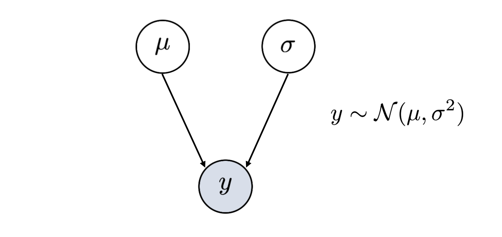
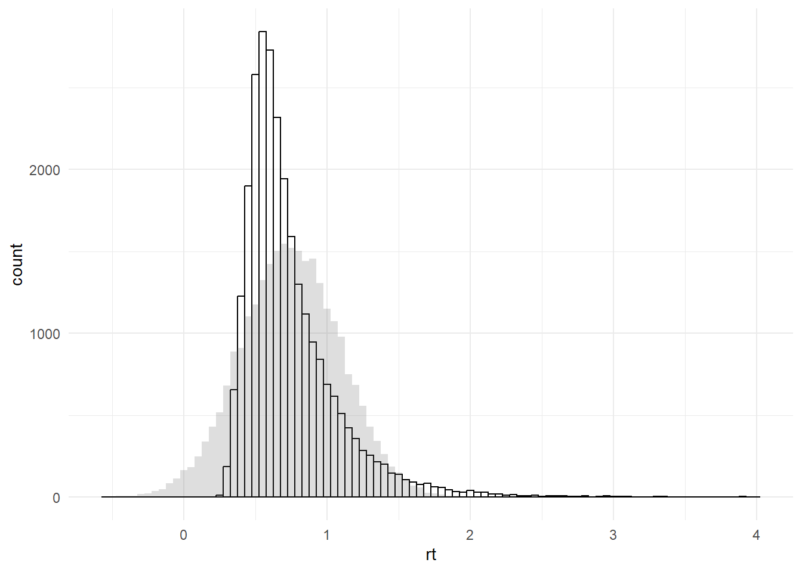

## Daten einlesen
library(tidyverse)
d_stroop <- read_csv("data/dataset_stroop_clean.csv") |>
mutate(across(where(is.character), as.factor)) |> # zu Faktoren machen
filter(rt < 4 & rt >= 0.1) |> # nur Antworten zwischen 100 und 4000ms einbeziehen
filter(corr == 1) |> # nur korrekte Antworten einbeziehen
na.omit() # Messungen mit missings weglassen13 Datengenerierende Prozesse
In der Forschung und Diagnostik interessieren uns oft Eigenschaften eines Prozesses oder einer Person, welche wir nicht direkt messen können. Testverfahren und Experimente werden angewendet, um diese latenten Variablen messbar zu machen. Mit statistischen Verfahren wird dann versucht aus den gemessenen Daten Informationen über die nicht direkt messbare Eigenschaft zu erhalten.1
13.1 Herausforderungen in der Analyse von neurowissenschaftlichen Daten
Neurowissenschaftliche Datensätze bringen oft folgende Herausforderungen in der Datenanalyse mit sich:
Kleine Stichprobengrössen (z.B. aufgrund teurer Datenerhebung oder Patientengruppen die schwieriger zu rekrutieren sind).
Heterogenität / Rauschen (z.B. weil der zu untersuchende Prozess schwierig zu isolieren ist, weil Personen sich sehr unterschiedlich verhalten)
Teure Datenerhebung und damit hoher Druck Resultate zu generieren sowie oft keine Möglichkeit das Experiment zu wiederholen (wichtig daher die gute Planung der Analyse sowie Vermeidung von inkonklusive Resultaten)
Vorgehen bei nicht-signifikanten/nicht-konklusiven Ergebnissen (Research waste, publication bias/file drawer effect)
Ziel ist es, trotz diesen Umständen, möglichst viel Information aus den vorhandenen Daten zu gewinnen. Hierbei spielt die Analysemethode eine wichtige Rolle.
Absence of evidence oder Evidence of absence?
Bei Nullhypothesen-Signifikanztests (NHST) wird eine binäre Entscheidung getroffen: Der Hypothesentest kann entweder ein signifikantes oder ein nicht signifikantes Ergebnis haben. Kann kein Effekt gefunden werden besteht die Notwendigkeit zu unterscheiden zwischen den zwei Möglichkeiten: - Absence of evidence: Es ist unklar ob es einen Effekt gibt oder nicht. Die Ergebnisse des Verfahrens sind inkonklusiv. - Evidence of absence: Es ist klar, dass es keinen Effekt gibt. Die Daten zeigen dies deutlich.
Zum Unterscheiden dieser zwei Fälle eignen sich die typischen NHSTs oft weniger, gerade wenn die Power nicht sehr hoch war. Bayesianische Statistik (z.B. bei begrenzten Datensätzen) sowie frequentistische Äquivalenztests (zwei entgegengesetzte NHSTs zum Testen von Nullunterschieden) sind Ansätze, um zwischen absence of evidence und evidence of absence zu unterscheiden.
Wir werden uns in den folgenden Veranstaltungen deshalb damit auseinandersetzen,
welche Annahmen hinter statistischen Verfahren stecken.
welche Fragen mit Bayesianischer Statistik beantwortet werden können.
wie Nullunterschiede statistisch getestet werden können.
13.2 Vorbereitung
Hands-on: Reaktivierung Statistikwissen
1. Besprechen Sie in kleinen Gruppen folgende Fragen:
Was ist eine Null-, was eine Alternativhypothese?
Was bedeutet die Distanz zwischen den beiden Mittelwerten?
Was ist statistische Power?
Welche Rolle spielt die Stichprobengrösse?
Was ist ein p-Wert?
Was sind Typ I und Typ II Fehler?
Welche Fragen können Sie mit einem Nullhypothesen- Signifikanztest (NHST) beantworten?
2. Können Sie die Begrifflichkeiten in dieser Grafik einordnen?

- Überlegen Sie sich, was Null- und Alternativhypothese in unseren beiden Kursexperimenten (Stroop und Random Dot) sein können.
[10 Minuten]
Projekt und Daten herunterladen
Hier finden Sie die Daten zum herunterladen.
Lesen Sie anschliessend die Daten ein:
13.3 Datengenerierende Prozesse
Nach dem Data Cleaning und Preprocessing geht es darum, welche Informationen die Daten über den zu untersuchenden Prozess beinhalten. Anhand der Daten sollen also Rückschlüsse auf den datengenerierenden Prozess, der zu diesen Daten geführt hat gezogen werden.
Bei jeder Datenanalyse müssen zahlreiche Annahmen getroffen werden. Um diese explizit zu machen und auch die Datenanalyse zu planen, hilft oft eine grafische Darstellung. Directed Acyclic Graphs (DAGs) sind eine Variante hierfür.
13.3.1 Directed Acyclic Graphs (DAGs)
Ein DAG (directed acyclic graph) eignet sich für die Darstellung komplexer Zusammenhänge in Daten und Prozessen. Mit einem DAG kann veranschaulicht werden, welche Variablen einander beeinflussen. Die Kreise (nodes) werden für einzelne Elemente verwendet und die Pfeile (arrows oder edges) beschreiben die Beziehung zwischen den Elementen. Die Darstellung beschreibt einen Prozess also mit gerichteten (directed) und nicht zyklischen (acyclic) Beziehungen.
Wir können beispielsweise annehmen, dass die Farbe-Wort-Kongruenz im Stroop Task beeinflusst, wie schnell die Aufgabe gelöst werden kann.
Ein DAG kann mit folgenden Schritten erstellt werden:
1. Beobachtete Variable bestimmen
Die beobachtete Variable nennen wir hier \(y\). Der Kreis ist grau eingefärbt, weil die Werte in dieser Variable gemessen wurden bzw. bekannt sind.
In unserem Beispiel haben wir die Reaktionszeit gemessen. Im Datensatz enthält die Variable rt die Information, wie schnell eine Person in jedem Trial geantwortet hat.
2. Verteilung bestimmen
Es muss festgelegt werden, welche Verteilung die Daten \(y\) am besten beschreibt. Eine Verteilung ist immer nur eine Annäherung. Die gemessenen Daten entsprechen dieser Annahme eigentlich nie perfekt. Es geht darum eine Verteilung zu finden die gut genug zu den Daten passt. Jede Verteilung hat Parameter, die geschätzt werden können. Es gibt Verteilungen, welche durch einen Parameter definiert werden, andere brauchen mehrere Parameter.
Eine sehr häufig verwendete Verteilung in statistischen Analysen ist die Normalverteilung. Die Annahme einer Normalverteilung ermöglicht es uns, mit nur 2 Parametern die Daten in der Variable zu beschreiben: Dem Mittelwert (\(\mu\)) und der Standardabweichung (\(\sigma\)). Natürlich ist das nur eine Annäherung, aber meistens eine genügend Gute!

Um die Verteilung unserer Datenpunkte zu bestimmen bzw. zu überprüfen können die Daten in R geplottet werden, z.B. mit geom_histogram(). Das Argument binwidth = bestimmt, wie breit ein Balken wird (hier 50 ms).
d_stroop |>
ggplot(aes(x = rt)) +
geom_histogram(colour="black", fill = "white",
binwidth = 0.05,
alpha = 0.5) +
theme_minimal()Diese Verteilung könnte beispielsweise mit einer Normalverteilung beschrieben werden. Der Mittelwert und die Standardabweichung können wir mit R berechnen:
# clean dataset first
mu = mean(d_stroop$rt)
mu[1] 0.7465929sigma = sd(d_stroop$rt)
sigma[1] 0.3455337Um zu schauen, wie gut diese Normalverteilung mit den Parametern \(\mu\) = 0.7465929 und \(\sigma\) = 0.3455337 unsere Daten beschreibt, können wir die Daten und simulierte Daten mit der angenommenenen Verteilung übereinander plotten:
d_stroop |>
ggplot(aes(x = rt)) +
geom_histogram(colour="black", fill = "white",
binwidth = 0.05,
alpha = 0.5) +
geom_histogram(aes(x = rnorm(1:length(rt), mu, sigma)),
binwidth = 0.05,
alpha = 0.2) +
theme_minimal()
Wir können auch density-Plots dafür nutzen:
d_stroop |>
ggplot(aes(x = rt)) +
geom_density(colour="black", fill = "white") +
geom_density(aes(x = rnorm(1:length(rt), mu, sigma)),
fill="grey",
alpha = 0.2) +
theme_minimal()
Hands-on: Verteilungen
Welche Daten stammen aus unseren Daten, welche entsprechen der Normalverteilung \(N(0.747, 0.346)\) ?
Wie gut passt die Annahme der Normalverteilung für unsere Reaktionszeitdaten? Wo passt sie gut? Wo nicht?
Finden Sie auf Distribution Zoo eine passendere Verteilung?
Prüfen Sie Ihre Verteilung, indem Sie unten an den obigen Plot diese Verteilung mit gewählten Parametern folgenden Code einfügen.
Wählen Sie dazu eine Verteilung und passende Parameter auf Distribution Zoo aus.
Schauen Sie unter dem Reiter
Codemit welcher Funktion die Daten inRgeneriert werden können. Wählen SieLanguage: RundProperty: random sample of size naus.Kopieren Sie die Funktion und ersetzen Sie
rnorm(1:length(rt), mu, sigma)in unserem R-Code für das Histogram oder den Density-Plot mit Ihrer neuen Funktion. Dasnmüssen Sie wieder1:length(rt)nennen.
[10 Minuten]
Bei Reaktionszeiten ist die Verteilung gar nicht so einfach anzupassen: Hier finden Sie “besser” geeignete Verteilungen, sowie die Möglichkeit für einen vorgegebenen Datensatz oder Ihre eigenen Daten Parameterwerte anzupassen.
3. Weitere Einflussfaktoren
In einem DAG können auch weitere Informationen, zum Beispiel Bedingungen sowie Messwiederholungen, hinzugefügt werden.
\(\mu\) kann sich zum Beispiel in Abhängigkeit der Bedingung (condition) verändern, also je nachdem ob die angezeigte Farbe kongruent war oder nicht.
Wenn wir nun den Einfluss der Bedingung untersuchen möchten, könnten wir uns fragen, wie stark diese eine Veränderung im Wert \(\mu\) bewirkt. Genau dies tun wir z.B. bei Mittelwertsvergleichen wie z.B. bei t-Tests.
Hands-on: DAG zeichnen
Wie würde ein DAG für die accuracy (Korrektheit) der Stroop-Daten aussehen?
Gehen Sie wie folgt vor:
Was ist bekannt/wurde gemessen?
Welche Verteilung beschreibt die Daten gut?
Welche Parameter müssen geschätzt werden?
[5 Minuten]
13.4 Datensimulation
Sich Gedanken zum datengenerierenden Prozess zu machen (wie beispielsweise mit einem aufgezeichneten Modell) hilft nicht nur in der Planung der Datenanalyse, sondern ermöglicht u.a. auch das Simulieren von Daten.
Mögliche Schritte in der Datensimulation
Datensimulation ist nützlich für:
Die Vorbereitung von Präregistrationen und Registered Reports
Testen/Debugging von Analysekripten (weil die ground truth bekannt ist)
Power für komplexe Modelle schätzen
Erstellen von reproduzierbaren Beispielsdatensätzen (für Demos, Lehre, oder wenn echte Datensätze nicht veröffentlicht werden können)
Prior distribution checks in der Bayesianischen Statistik
Verstehen von Modellen und Statistik
Um Hypothesen zu testen, müssen selbstverständlich nicht simulierte Daten erhoben werden! 2
Uns kann beispielsweise die Aufmerksamkeitsleistung interessieren, welche wir mit einem Testverfahren für Aufmerksamkeit zu messen versuchen. Eine Neurowissenschaftlerin, welche sich für den Prozess von Aufmerksamkeit interessiert, würde versuchen die Aufmerksamkeitsleistung von vielen Leuten unter verschiedenen Bedingungen zu messen um zu untersuchen, durch was Aufmerksamkeit beeinflusst wird. Ein klinischer Neuropsychologe hingegen hätte vielleicht das Ziel festzustellen, ob die Aufmerksamkeitsleistung einer Person von der Norm abweicht, beispielsweise weil sie durch einen Unfall eine Kopfverletzung erlitten hat. Beide messen Daten und beide ziehen aus den gemessenen Daten Rückschlüsse auf eine unterliegende Eigenschaft eines Prozesses oder einer Person.↩︎
https://www.science.org/content/article/dutch-university-sacks-social-psychologist-over-faked-data↩︎